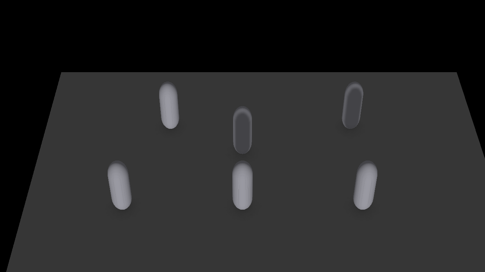
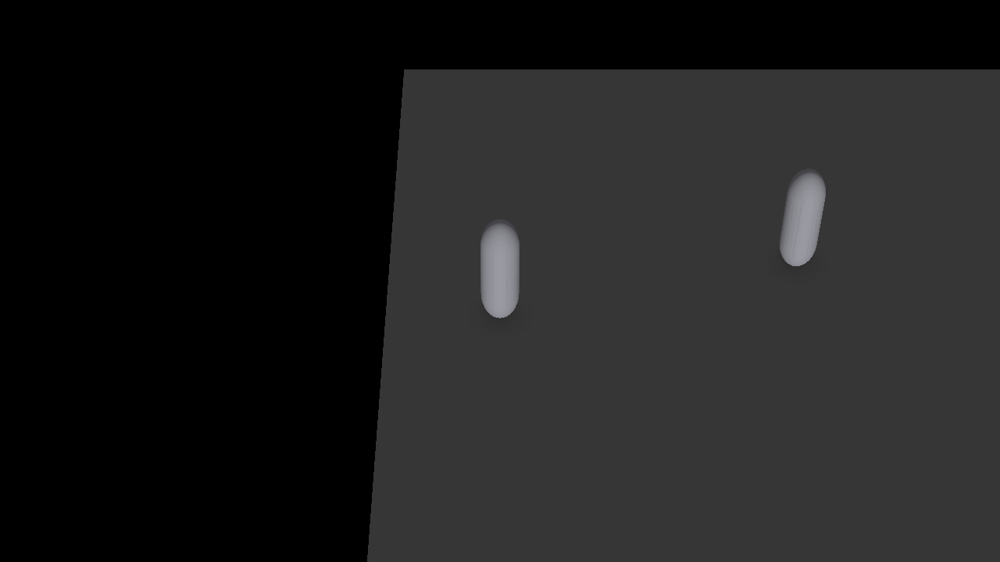
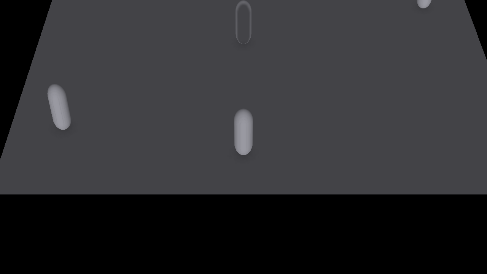

原則不直接碰遊戲引擎。企劃的每個決定先寫進一份跟引擎無關的規格檔，再由這份檔案產出檢查報告、灰盒試玩與 Unity 專案。看到任何一筆資料，都能查回它是根據哪條原則定的。
每一層只做自己的事。原則只在企劃層與驗證層介入，落地層照規格做就好。
| 層 | 產出 | 原則怎麼介入 |
|---|---|---|
| 1 企劃 | 人看的設計決定 | 照 20 步順序，從魔王開始；每個決定附原則編號，記進規格的 design.decisions[] |
| 2 規格 | rpg-spec.json | 能寫成資料的決定寫進對應區塊：魔王→敵人＋登場對話；城鎮的困擾→NPC＋旗標＋對話；看得到拿不到的寶箱→寶箱＋鑰匙旗標 |
| 3 落地 | 網頁試玩、Unity 專案 | 不介入，只照規格做 |
| 4 驗證 | 檢查報告、試玩紀錄 | 把可量化的原則變成自動檢查；量化不了的（角色立起來了嗎）靠人讀 |
為了接上堀井的系統類原則，規格檔新增了幾個選填欄位：怪物的聰明程度（動物／人類／神）、行動傾向、會不會集中攻擊同一人；夥伴的「先入觀」；道具等級；地圖類型與區塊等級；旗標的「重要情報」標記。
以示範作品「霧笛港」為基準，13 項全部符合。數字門檻（例如最少幾步才遇敵）可以依自己的遊戲調整。
| 原則 | 檢查什麼 |
|---|---|
| H-059 | 每句台詞不超過三行 |
| H-121 | 標成「重要情報」的旗標，至少有兩個不同 NPC 會說 |
| H-078 | 每個遇敵區有最少步數，不會一走出城就連續遇敵 |
| H-077 | 遇敵步數是一個區間，玩家數不出規律 |
| H-080 | 有遇敵的地圖都標了區塊等級，玩家判斷得出危不危險 |
| H-026 | 寶箱道具等級沒有比地圖區塊等級高太多 |
| H-107 | 關鍵道具有確定的取得方式，不只靠機率掉落 |
| H-043 | 每場頭目戰都有登場對話，玩家知道他為什麼做壞事 |
| H-018 | 每個城鎮至少有一個推動劇情的事件 |
| H-019 | 城鎮 NPC 夠多，有生活感 |
| H-068 | 每隻怪物都宣告了聰明程度 |
| H-088 | 兩個以上夥伴時，每人有自己的先入觀，AI 不會一模一樣 |
| 流程 | 企劃 20 步都有紀錄，每筆資料查得回原則 |
規格檔改了，重跑產生器就能玩新版本。示範作品《霧笛港》用 20 步流程從頭做出：一座港鎮、一片海濱、一個洞窟、一個魔王。對話、旗標、出港條件、夥伴加入、魔王戰與結局都已用自動腳本從開場走到結局。
全滅時照 H-105 處理：不會 Game Over，金幣減半、經驗值保留。拒絕夥伴時她不會加入。
▶ 開始試玩霧笛港 （平衡還沒調：用初始等級直接打魔王會輸。）
BakinKit 是在 Unity 裡重現 RPG Developer Bakin 資料庫與事件系統的套件。它讀 Bakin 的中介格式（IR v3），所以另寫了一支轉換器把規格檔轉成 IR v3，再用 BakinKit 既有的匯入器。



2026-10-07 實測，Unity 6000.5.10f1。畫面全是灰盒占位，不是正式美術。
轉不過去的東西不會偷偷丟掉，轉換器會逐條寫進報告，分成「近似」「未轉」「未查證」三類。
| 項目 | 資料已建 | 工具驗證 | 使用者確認 |
|---|---|---|---|
| 138 條原則 | 完成 | 格式檢查通過 | 待確認 |
| 20 步企劃流程 | 完成 | 引用編號全部存在 | 待確認 |
| 堀井檢查器 | 13 項 | 回歸測試 18/18 | 待確認 |
| 霧笛港灰盒試玩 | 完成 | 自動走完開場到結局 | 待確認 |
| BakinKit 匯入 | 轉換器完成 | 匯入 0 錯誤 PlayMode 未測 | 未開始 |
| ORK 3 builder | 未開始 | — | — |